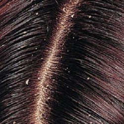
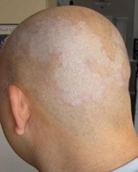

Hair dandruff


1. The scalp should be clean before oiling the hair.
2. Do brush hair as a daily routine, with firm downward strokes.
3. Wet hair should not be brushed, as hair is weak when it is wet, and breaks easily.
4. Take care and the time to massage the scalp while oiling hair, as this will increase the blood circulation around the roots.
Tips
1. Mix 1 egg with 1 cup of yogurt and apply on the scalp. Leave for ½ an hour and wash.
2. Mix 1 tblspn of Olive oil with 1 tspn of limejuice. Apply well on the scalp and cover the head by tying an old scarf. Keep it on overnight and shampoo the next morning.
3. 1 tspn of Fenugreek seed powder mixed with an egg. Apply and leave for ½ an hour before shampooing the hair.
4. 1 tspn fenugreek seed powder mixed with 1 cup of yogurt. Apply and leave for ½ an hour before washing.
5. Take 2 tblspns of Beetroot juice and add 1 egg and 1 tspn limejuice to this. Apply and leave for ½ an hour before washing.
6. Oil hair well before going to bed. Next morning mix 1 tspn limejuice with ½ tspn salt. Rub this on the scalp with the peel of a lime turned inside out. Leave for 1 hour before shampooing.